Geometry and Markers¶
Under review by José Domínguez and Alex Crespo
Markers and particle ordering¶
mkfluid and mkbound identify fluid and boundary populations. They associate geometry with initialisation, motion, floating-body definitions and other features. They are not particle IDs. mkorientfluid and mkorientbound set the ordering of particles created for a population, which can be inspected with the particle idp field.
The current template below reserves 241 boundary and 9 fluid labels; the presentation's earlier illustration uses 240 and 10. Keep the counts appropriate to the case. The source describes a standard 250-label configuration, a 65,530-label GenCase_MkWord configuration and a separate solver-compilation limit above 2,048 distinct markers. These are build-dependent capabilities; the larger generator capacity does not establish that every solver binary accepts the same number of markers.
<mkconfig boundcount="241" fluidcount="9">
<mkorientbound mk="0" orient="YxZ"/>
<mkorientfluid mk="0" orient="Xyz"/>
<mkorientfluid mk="1" orient="zyx"/>
</mkconfig>
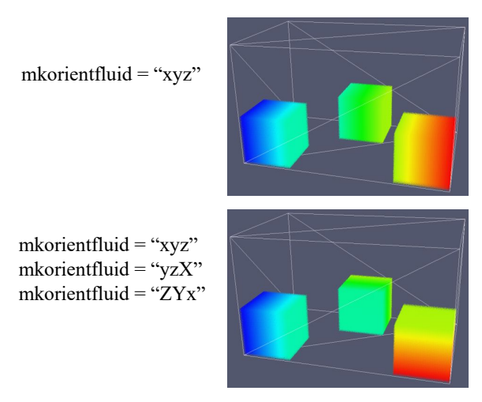
Geometry generation and computational bounds¶
geometry/definition establishes the lattice spacing dp and the region in which GenCase may create particles. Reducing dp increases particle count. Equal minimum and maximum Y coordinates define the two-dimensional X–Z configuration illustrated in the source; equality applies to the Y coordinates, not to all components of the two points.
After particle generation, the solver's default simulation bounds are calculated from the generated particle positions. They may be adjusted independently with execution/parameters/simulationdomain. A drawing region and a solver simulation domain are therefore different settings.
<definition dp="0.05" comment="Initial inter-particle distance" units_comment="metres (m)">
<pointref x="0" y="0" z="0"/>
<pointmin x="-0.25" y="-0.05" z="-0.05"/>
<pointmax x="2" y="1" z="1"/>
</definition>
Particles are created only inside the generation domain. Afterwards the simulation domain is recalculated from the minimum and maximum positions of the generated particles; it can also be configured in parameters.
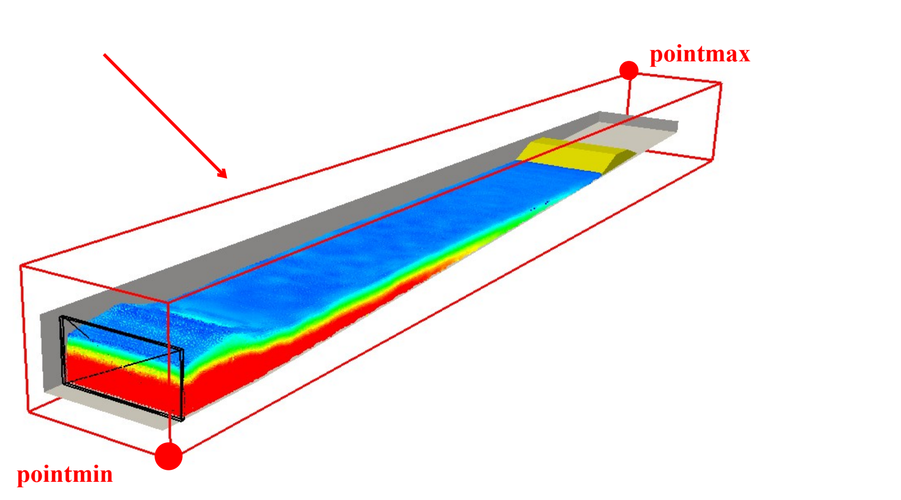
Command lists and drawing state¶
GenCase executes drawing commands in mainlist. Reusable lists are declared as list name="..." and called with runlist name="..."; times repeats a call. The source combines BoxList and CylinderList inside StructureList, then calls the assembled structure at different translations. List order matters because commands change the current marker, transformation and drawing state.
| Command or setting | Effect |
|---|---|
resetdraw |
Restore drawing defaults and delete previously drawn points. |
setdrawmode mode="wire" |
Draw edges. |
setdrawmode mode="face" |
Draw faces. |
setdrawmode mode="solid" |
Draw interiors. |
setdrawmode mode="full" |
Combine faces and interior. |
setactive drawpoints="false" |
Generate shapes without drawing particle points. |
setactive drawshapes="false" |
Disable shape generation; equivalent in purpose to setshapemode set to null. |
setactive vtkout="false" |
Do not register generated shape-output files in the XML output list. |
setshapemode |
Select actual coordinates or dp-aligned geometry and the population types represented in shape output. |
shapeout file="..." |
Write the accumulated geometric shapes. reset="true" starts a separate accumulation for subsequent shapes. |
setshapemode contains text options separated by |, for example dp | bound; its options are not a numerical parameter enumeration. Shape output helps inspect a geometry, but does not prove that a closed volume was filled correctly with particles.
<setactive drawpoints="true" drawshapes="true" vtkout="true"/>
<setdrawmode mode="wire"/>
<setdrawmode mode="face"/>
<setdrawmode mode="solid"/>
<setdrawmode mode="full"/>
<setshapemode>bound</setshapemode>
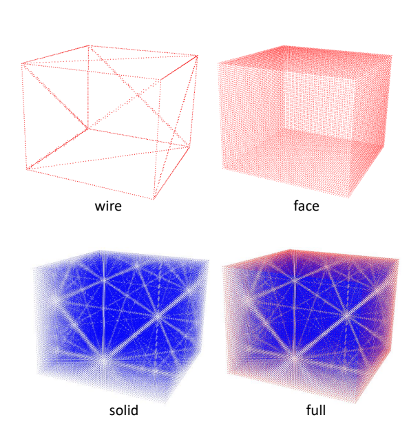
In the source tank example, fluid marker 0 is drawn with boxfill set to solid, while boundary marker 0 uses bottom | left | right | front | back, leaving the top open. The illustrated fluid box has size (0.4, 0.67, 0.3) m and the tank (1.6, 0.67, 0.4) m. The current distributed dam-break example retains these geometry values; they are case dimensions, not defaults.
setshapemode accepts coordinate choices actual and dp, and population choices fluid, bound and void; null disables shape generation. setactive enables drawpoints, drawshapes and vtkout by default in the source reference. A shape-only pass can therefore produce inspection geometry without creating SPH particles. Named outputs such as Case_Box_Dp.vtk and Case_Building_Dp.vtk distinguish selected objects; combined shape outputs such as Case__Actual.vtk and Case__Dp.vtk collect the enabled objects. The exact file prefix is supplied by the case.
The source's runlist name="StructureList" times="5" repeats a reusable structure five times. Each call executes in the current drawing state. Save and restore the transformation matrix inside a reusable list when subsequent calls should not inherit its local transformations. The following current-reference list fragments show the declaration and call syntax; their Hola names are independent of the source's named BoxList/CylinderList illustration.
Selecting populations and transforming geometry¶
setmkvoid selects empty points; setmkfluid and setmkbound select fluid or boundary points with the given local marker. setmknextfluid and setmknextbound increment or decrement the current marker according to next; setmknextauto controls automatic increments after drawing commands. A void drawing operation can remove a previously filled region before another population is drawn there.
For setmknextfluid and setmknextbound, next="true" increments the marker and next="false" decrements it. Automatic increments after each drawing command are enabled with setmknextauto auto="true" and disabled with auto="false". These commands belong in the geometry drawing list.
Transformations apply through the current drawing matrix: move translates, scale scales, rotate rotates about a direction, and rotateline defines the axis with two points. matrixsave pushes a matrix onto the stack and matrixload restores the saved matrix. matrixreset returns to the identity. Transformation order changes the result.
<move x="1" y="2" z="3"/>
<scale x="0.1" y="0.2" z="0.3"/>
<rotate ang="35" x="1.1" y="1.2" z="1.3"/>
<rotateline ang="45">
<point x="1.11" y="1.21" z="1.31"/>
<point x="1.12" y="1.22" z="1.32"/>
</rotateline>
The four panels show, in reading order, the original box, translation by (0.5, 0, 0), scaling by (2, 1.5, 0.5), and rotation by 45 degrees about (0, 0, 1). Each operation precedes the box drawing in its illustrated configuration. The source writes the illustrative command rows as move x="0.5" y="0" z="0", scale x="2" y="1.5" z="0.5" and rotate x="0" y="0" z="1" ang="45"; the drawing command is abbreviated there as drawbox …, rather than a complete XML fragment.
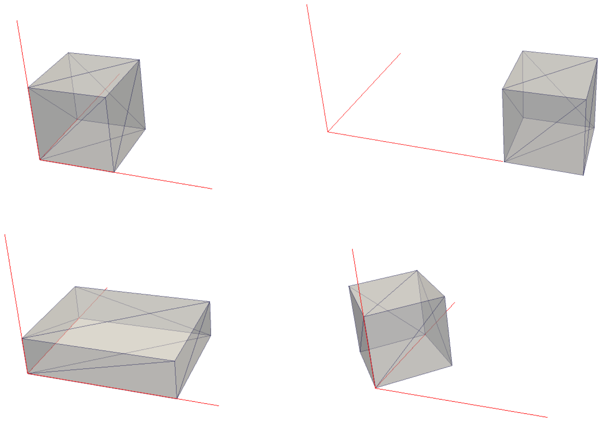
Geometric primitives¶
The following commands belong to a geometry command list. Drawing mode and current marker apply to them. Counterclockwise point order is required by the triangle illustration. Surface orientation also matters when assembling closed external geometry.
| Family | Commands and defining data |
|---|---|
| Points and lines | drawpoint, drawpoints, setlinebegin with drawlineto, two-point drawline, and multi-point drawlines. |
| Triangles and quadrilaterals | drawtriangle uses three points; drawquadri uses four and the source allows non-coplanar points. |
| Connected triangles | drawtrianglesstrip builds a strip; drawtrianglesfan builds triangles around the common first point. |
| Indexed triangles | drawtriangles separates a point list from triangles expressed as point indices. |
| Box | drawbox uses a corner and size or endpoint; boxfill selects interior or named faces. |
| Pyramid | drawpyramid starts with the top point followed by at least three base points. |
| Prism | drawprism requires an even number of at least six points; the first half describes the base and the second half the top. |
| Beach profile | drawbeach uses the lateral profile points. |
| Extrusion | drawextrude extrudes a point-defined line using an extrude vector; closed controls closure. |
| Solid defined by triangles | drawfigure fills the interior defined by its points and triangular planes; face-only output instead illustrates the surface. |
| Sphere | drawsphere uses centre point and radius. |
| Ellipsoid | drawellipsoid uses the two source-defined centre points and radius. |
| Cylinder | drawcylinder uses two axis points, radius and an optional face mask. |
<drawline>
<point x="1" y="2" z="3"/>
<point x="11" y="21" z="31"/>
</drawline>
<drawtriangle>
<point x="0" y="0" z="3"/>
<point x="0" y="3" z="0"/>
<point x="3" y="0" z="0"/>
</drawtriangle>
<drawbox>
<boxfill>bottom | left | right | front | back</boxfill>
<point x="0" y="0" z="0"/>
<size x="1" y="2" z="3"/>
</drawbox>
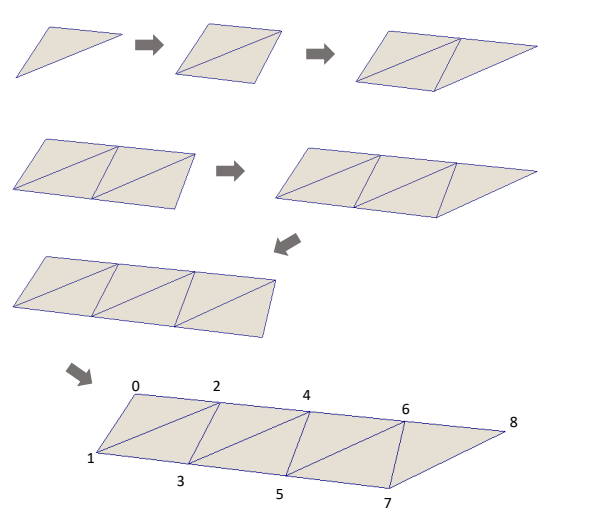
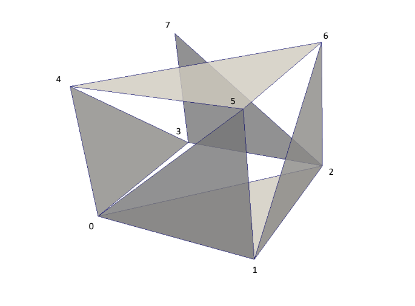
In the two lower panels, all ^ top means all faces excluding the top; bottom | left | right means only the bottom, left and right faces.
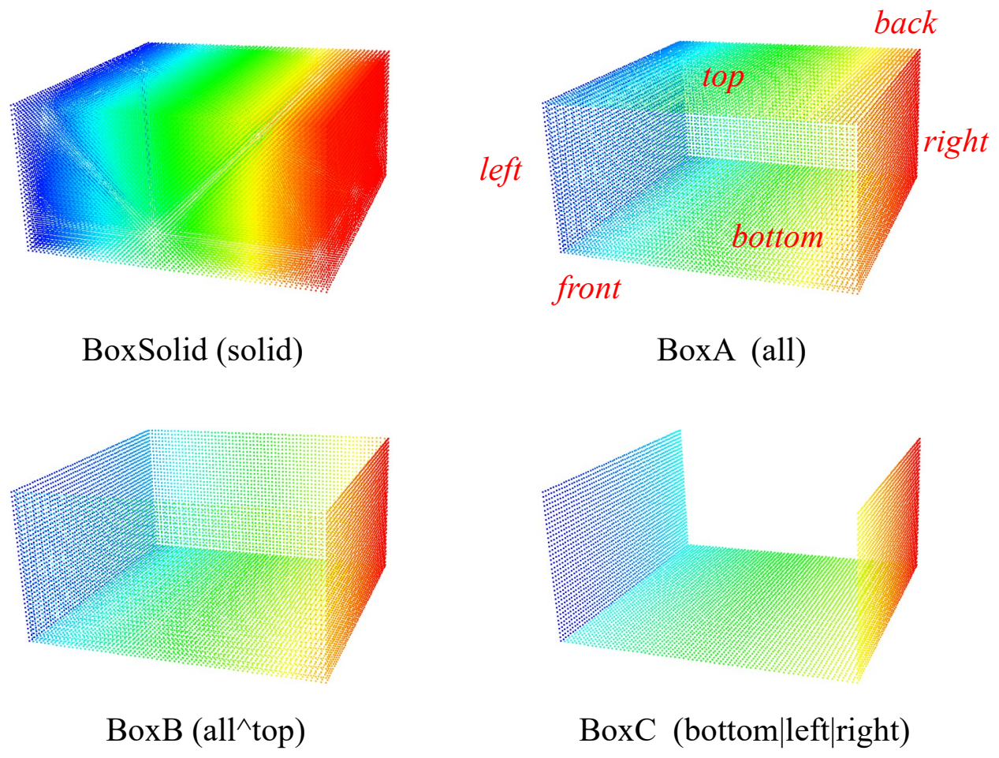
Connected lines and quadrilaterals¶
setlinebegin establishes the current point and drawlineto joins it to a new point. drawlines joins successive points; drawquadri uses four vertices, including the non-coplanar arrangement allowed by the source. The following are current-reference command fragments, inserted in a drawing list after selecting the marker and drawing mode.
<setlinebegin x="0" y="1" z="0.5"/>
<drawlineto x="10" y="11" z="10.5"/>
<drawlines>
<point x="0" y="0" z="1"/>
<point x="0" y="1" z="0"/>
<point x="1" y="0" z="0"/>
<point x="0" y="0" z="2"/>
<point x="0" y="2" z="0"/>
<point x="2" y="0" z="0"/>
</drawlines>
<drawquadri>
<point x="0" y="0" z="4"/>
<point x="0" y="4" z="0"/>
<point x="4" y="0" z="0"/>
<point x="4" y="4" z="4"/>
</drawquadri>
Triangle strips, fans and indexed faces¶
A strip reuses the last edge as each further point adds a triangle. A fan keeps the first point as its common vertex; repeating the closing outer point closes the source's circular example. Indexed faces instead refer to a shared points list. Their triangle attributes x, y and z are vertex indices, not Cartesian coordinates. Preserve ordering consistently with the intended face orientation. These current-reference fragments illustrate all three forms.
<drawtrianglesstrip>
<point x="0" y="1" z="0"/>
<point x="0" y="0" z="0"/>
<point x="1" y="1" z="0"/>
<point x="1" y="0" z="0"/>
<point x="2" y="1" z="0"/>
<point x="2" y="0" z="0"/>
<point x="3" y="1" z="0"/>
<point x="3" y="0" z="0"/>
<point x="4" y="1" z="0"/>
</drawtrianglesstrip>
<drawtrianglesfan>
<point x="0" y="0" z="0"/>
<point x="1" y="0" z="0"/>
<point x="0.9" y="0.5" z="0"/>
<point x="0.5" y="0.9" z="0"/>
<point x="0" y="1" z="0"/>
<point x="-0.5" y="0.9" z="0"/>
</drawtrianglesfan>
<drawtriangles>
<points>
<point x="0" y="0" z="0"/>
<point x="1" y="0" z="0"/>
<point x="1" y="1" z="0"/>
<point x="0" y="1" z="0"/>
<point x="0" y="0" z="0.8"/>
<point x="1" y="0" z="0.8"/>
<point x="1" y="1" z="0.8"/>
<point x="0" y="1" z="0.8"/>
</points>
<triangles>
<triangle x="0" y="1" z="5"/>
<triangle x="1" y="2" z="6"/>
<triangle x="2" y="3" z="7"/>
<triangle x="3" y="0" z="4"/>
<triangle x="0" y="2" z="1"/>
<triangle x="4" y="5" z="6"/>
</triangles>
</drawtriangles>
The open fan uses the six-point drawtrianglesfan example above and is saved as TrianglesFan with reset="true". The closed source fan uses the following ordered points; the last repeats the first outer point, labelled 1/10 in the figure. Both source fans select boundary marker 0 and shape mode dp | bound.
<setmkbound mk="0"/>
<drawtrianglesfan>
<point x="0" y="0" z="1"/>
<point x="1" y="0" z="0"/>
<point x="0.8" y="0.6" z="0"/>
<point x="0.2" y="1" z="0"/>
<point x="-0.5" y="0.9" z="0"/>
<point x="-0.9" y="0.3" z="0"/>
<point x="-0.9" y="-0.3" z="0"/>
<point x="-0.5" y="-0.9" z="0"/>
<point x="0.2" y="-1" z="0"/>
<point x="0.8" y="-0.6" z="0"/>
<point x="1" y="0" z="0"/>
</drawtrianglesfan>
<shapeout file="TrianglesFan2" reset="true"/>
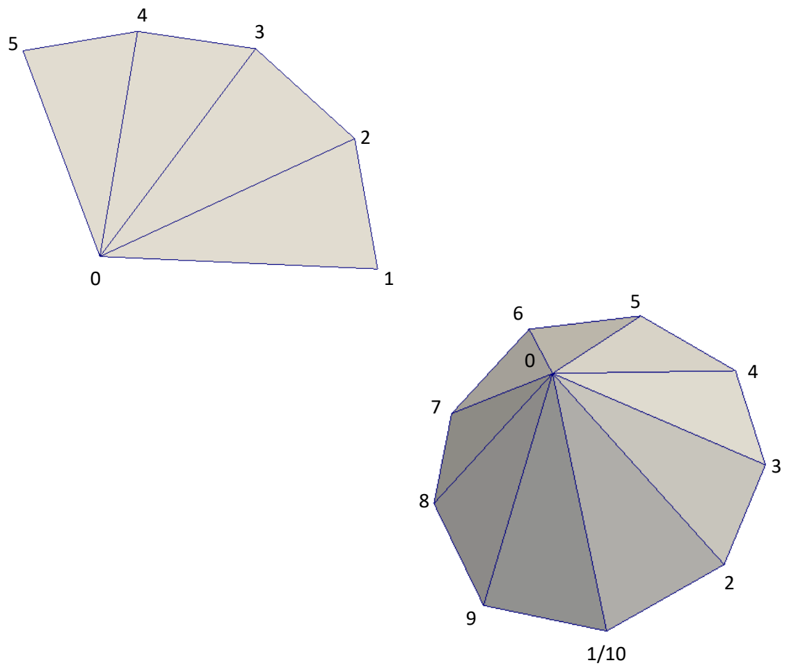
Polyhedra, extrusion and filled figures¶
For drawpyramid, the first point is the apex and the remaining points define the base. drawprism pairs the first half of its points with the second half: the source includes non-rectangular star profiles and a twisted prism, so this is not restricted to a rectangular box. Face masks follow that point order. A beach is described by lateral-profile points; an extrusion adds its displacement vector to each profile vertex. In the source drawfigure example, indexed point triples specify planes whose interior sides define the solid; they do not form a closed mesh of finite triangular faces. drawtriangles or face drawing represents the surface. The pyramid fragment retains the source's unmasked example (mask=0) and matching vertex coordinates; the other fragments use the current reference's own illustrative inputs. A different mask is a different face selection, not a syntax-only replacement for source masks 2 or 128.
<drawfigure>
<points>
<point x="0" y="0" z="0"/>
<point x="1" y="0" z="0"/>
<point x="1" y="1" z="0"/>
<point x="0" y="1" z="0"/>
<point x="0" y="0" z="0.8"/>
<point x="1" y="0" z="0.8"/>
<point x="1" y="1" z="0.8"/>
<point x="0" y="1" z="0.8"/>
</points>
<triangles>
<triangle x="0" y="1" z="5"/>
<triangle x="1" y="2" z="6"/>
<triangle x="2" y="3" z="7"/>
</triangles>
</drawfigure>
<drawpyramid mask="0">
<point x="0.25" y="0.25" z="0.7"/>
<point x="0" y="0" z="0"/>
<point x="1" y="0" z="0"/>
<point x="0" y="1" z="0"/>
</drawpyramid>
<drawprism>
<point x="0" y="0" z="0"/>
<point x="1" y="0" z="0"/>
<point x="0" y="1" z="0"/>
<point x="0" y="0" z="0.5"/>
<point x="1" y="0" z="0.5"/>
<point x="0" y="1" z="0.5"/>
</drawprism>
<drawbeach mask="1">
<point x="0" y="3" z="1.2"/>
<point x="0" y="3" z="0"/>
<point x="1.7" y="3" z="0"/>
<point x="3.5" y="3" z="0.5"/>
<point x="5.5" y="3" z="0.5"/>
<point x="5.5" y="3" z="1.2"/>
</drawbeach>
The twisted prism pairs the first four base points with the following four top points. The source selects boundary marker 0, mask="0", shape mode dp | bound, and output Prism4 with reset enabled. Its surrounding setdrawmode row says mode="fill"; the current template lists full, not fill. That source spelling is recorded here without silently translating its execution meaning.
<drawprism mask="0">
<point x="0" y="0" z="0"/>
<point x="4" y="0" z="0"/>
<point x="4" y="4" z="0"/>
<point x="0" y="4" z="0"/>
<point x="2" y="1" z="5"/>
<point x="3" y="2" z="5"/>
<point x="2" y="3" z="5"/>
<point x="1" y="2" z="5"/>
</drawprism>
<shapeout file="Prism4" reset="true"/>
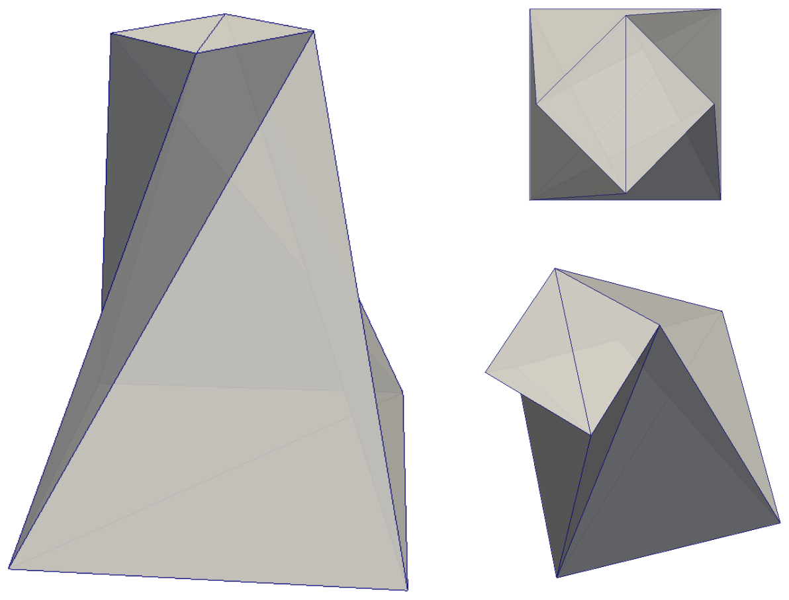
The left panel is the source solid drawfigure; the right is its face representation (drawtriangles or face-mode drawfigure). The source uses the complete eight-point and six-triangle lists already given in the drawtriangles block above: (0,1,5), (1,2,6), (2,3,7), (3,0,4), (0,2,1) and (4,5,6). Its wrapper selects boundary marker 0 and shape mode dp | bound. The separate current-reference drawfigure fragment above contains three planes; it is a different illustrative input, whose equivalence to the source volume has not been established.
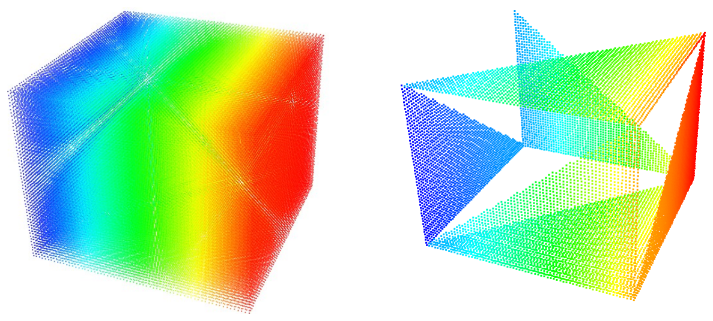
A prism needs at least six points and an even point count. Its first half defines the base and its second half the corresponding top. In the star-profile illustration, both halves have the same X/Y coordinates at Z=0 and Z=6. The source selects boundary marker 0, shape mode dp | bound, and saves Prism3 with reset enabled. As in the twisted-prism source, its wrapper says setdrawmode mode="fill"; this historical spelling is not silently changed to the current template’s full.
<drawprism mask="0">
<point x="0" y="0" z="0"/>
<point x="1" y="-3" z="0"/>
<point x="2" y="0" z="0"/>
<point x="5" y="1" z="0"/>
<point x="2" y="2" z="0"/>
<point x="1" y="5" z="0"/>
<point x="0" y="2" z="0"/>
<point x="-3" y="1" z="0"/>
<point x="0" y="0" z="6"/>
<point x="1" y="-3" z="6"/>
<point x="2" y="0" z="6"/>
<point x="5" y="1" z="6"/>
<point x="2" y="2" z="6"/>
<point x="1" y="5" z="6"/>
<point x="0" y="2" z="6"/>
<point x="-3" y="1" z="6"/>
</drawprism>
<shapeout file="Prism3" reset="true"/>
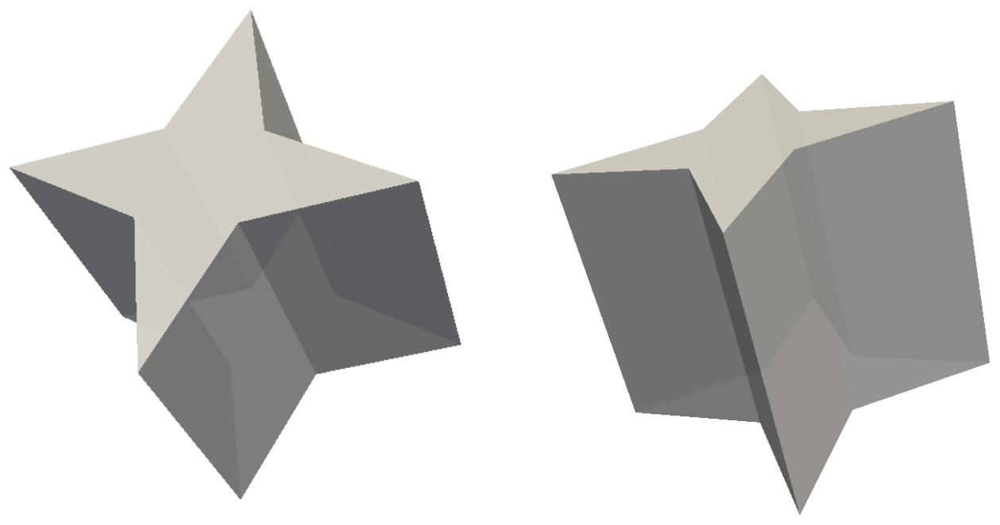
The labelled extrusion uses profile points P0–P5 in order and displacement (0, 3, 0). This is the source profile; the separate layered current-reference example below uses different Y coordinates and adds layers.
<mainlist>
<setmkbound mk="0"/>
<drawextrude closed="false">
<point x="0" y="0" z="1.2"/>
<point x="0" y="0" z="0"/>
<point x="1.7" y="0" z="0"/>
<point x="3.5" y="0" z="0.5"/>
<point x="5.5" y="0" z="0.5"/>
<point x="5.5" y="0" z="1.2"/>
<extrude x="0" y="3" z="0"/>
</drawextrude>
</mainlist>
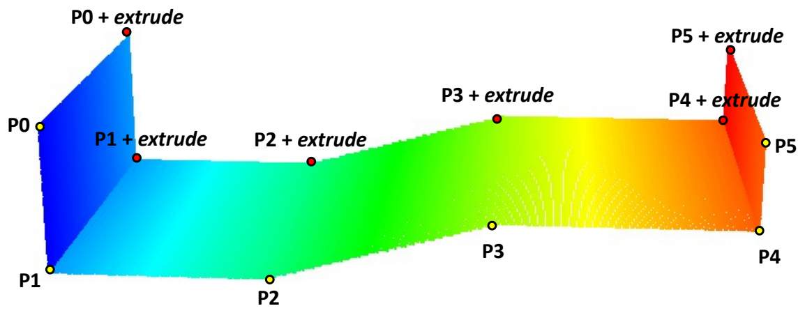
Rounded primitives and surface-width settings¶
A sphere uses a centre and radius, an ellipsoid uses the two centre points and radius specified by the command, and a cylinder uses two axial points and radius. In face drawing, ctesphere, cteellipsoid, ctecylindertube and ctecylindercover control the corresponding drawn widths. The source illustrates 0.4, 0.5, 0.6 and 0.7 respectively, whereas the current reference provides different illustrative values. These are geometry-dependent choices. ctespherenumsides and ctecylindernumsides affect the polygonal shape representation, not the particle spacing dp. The current-reference examples below preserve their values.
<setdpctes cteline="1.5" ctetriangleweight="1.5" ctetrianglelimits="1.5" ctesphere="1.5" ctespherenumsides="24" cteellipsoid="1.5" ctecylindertube="1.5" ctecylindercover="1.5" ctecylindernumsides="24" cterevolutionnumsides="24"/>
<drawellipsoid radius="1.5">
<point x="1" y="0" z="0"/>
<point x="1" y="1" z="1"/>
</drawellipsoid>
<drawcylinder radius="0.85" mask="1">
<point x="1" y="1" z="0"/>
<point x="1" y="1" z="1"/>
</drawcylinder>
The left cylinder is solid and the right cylinder uses face drawing. Their original input coordinates and face-width settings are reproduced here. The source’s explanatory last line names ctespherenumsides while its cylinder code uses ctecylindernumsides; that mismatch is retained as a source-text discrepancy rather than changing either setting.
<mainlist>
<setmkbound mk="0"/>
<setdrawmode mode="solid"/>
<drawcylinder radius="1" mask="0">
<point x="1.5" y="1.5" z="0.5"/>
<point x="1.5" y="1.5" z="3"/>
</drawcylinder>
<setdrawmode mode="face"/>
<drawcylinder radius="1" mask="0">
<point x="3.5" y="2.5" z="0.5"/>
<point x="3.5" y="2.5" z="3"/>
</drawcylinder>
</mainlist>
<setdpctes ctecylindertube="0.6"/>
<setdpctes ctecylindercover="0.7"/>
<setdpctes ctecylindernumsides="40"/>
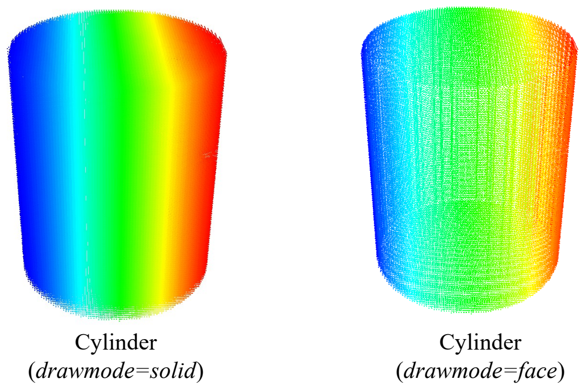
Face masks, curved surfaces and layers¶
A polyhedron mask identifies faces to hide. In the bit-mask form, decimal 0 hides none; 1, 2, 4 and 8 select the first through fourth faces; 12 is binary 1100 and hides the third and fourth. For pyramids the first bit is the base. For prisms the first two are base and top, followed by lateral faces. The source beach example uses 128, binary 10000000, to hide the eighth face.
The alternative face-index notation uses |, for example mask="1 | 2 | 6 | 7". The source uses mask="X|X" when a single face index must be distinguished from an integer bit mask. Do not interpret a single decimal mask value as a face number without that distinction.
For curved faces, setdpctes controls the drawing width coefficients: ctesphere, cteellipsoid, ctecylindertube and ctecylindercover. ctespherenumsides and ctecylindernumsides control the polygonal resolution of the corresponding VTK representations. The source's sphere/cylinder illustrations use 40 sides; the current template also illustrates 24. These tessellation examples are not universal accuracy settings.
In free-draw mode, layers vdp="..." offsets layers by multiples of dp for boxes, extrusions, spheres and cylinders. Zero is the reference layer; signed values lie on different sides of it. An asterisk marks a layer whose shape is saved by shapeout. The source shows box offsets 0,-1, cylinder offsets 0,1,3,4 and extrusion offsets 0,-1,-2.
<drawextrude closed="false">
<point x="0" y="0" z="1.2"/>
<point x="0" y="0" z="0"/>
<point x="1.7" y="1" z="0"/>
<point x="3.5" y="1" z="0.5"/>
<point x="5.5" y="2" z="0.5"/>
<point x="5.5" y="2" z="1.2"/>
<extrude x="0" y="3" z="0"/>
<layers vdp="-1*,0,1*"/>
</drawextrude>
<drawsphere radius="0.8">
<point x="1" y="1" z="0"/>
<layers vdp="-0.5*,-1.5"/>
</drawsphere>
The illustrated source is named CaseWavemaker_Def.xml. Faces 1, 2, 6 and 7 are omitted, leaving faces 3, 4 and 5; the wireframe and numbered views retain their correspondence.
<setmkbound mk="0"/>
<drawprism mask="1 | 2 | 6 | 7">
<point x="5" y="0" z="1.5"/>
<point x="5" y="0" z="1.1"/>
<point x="1" y="0" z="0"/>
<point x="0" y="0" z="0"/>
<point x="0" y="0" z="1.5"/>
<point x="5" y="2" z="1.5"/>
<point x="5" y="2" z="1.1"/>
<point x="1" y="2" z="0"/>
<point x="0" y="2" z="0"/>
<point x="0" y="2" z="1.5"/>
</drawprism>
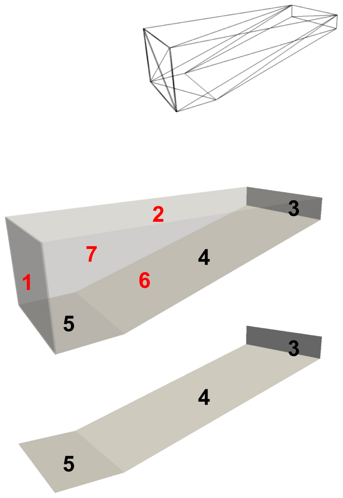
The left box shows offsets 0,-1, the centre cylinder 0,1,3,4, and the lower extrusion 0,-1,-2, in multiples of dp. The source’s full example also marks saved shapes with asterisks: 0*,-1, 0,1,3,4* and 0*,-1,-2, respectively. These are source geometry inputs, independent of the smaller current-reference layered fragment above.
<mainlist>
<setshapemode>actual | bound</setshapemode>
<setfrdrawmode auto="true"/>
<setmkbound mk="0"/>
<drawbox>
<boxfill>all</boxfill>
<point x="2" y="-1" z="1.5"/>
<size x="1.4" y="2" z="2"/>
<layers vdp="0*,-1"/>
</drawbox>
<drawcylinder radius="0.5" mask="2">
<point x="7" y="-1" z="2.5"/>
<point x="7" y="1" z="2.5"/>
<layers vdp="0,1,3,4*"/>
</drawcylinder>
<drawextrude closed="false">
<point x="0" y="0" z="3"/>
<point x="2" y="0" z="0"/>
<point x="8" y="0" z="0"/>
<point x="9" y="0" z="1"/>
<point x="10" y="0" z="1"/>
<point x="10" y="0" z="2"/>
<point x="11" y="0" z="2"/>
<point x="12" y="0" z="3"/>
<extrude x="0" y="1" z="0"/>
<layers vdp="0*,-1,-2"/>
</drawextrude>
<shapeout file="" reset="true"/>
</mainlist>
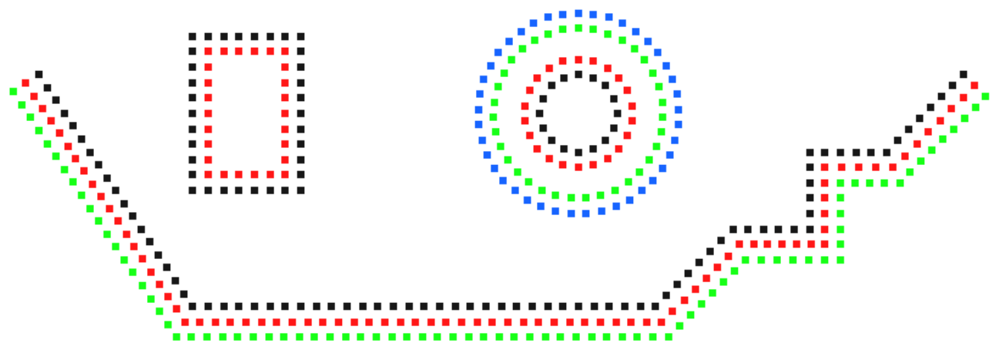
External geometry and bathymetry¶
drawfilestl, drawfileply and drawfilevtk convert external geometry to points. The VTK reader also supports the VTP and VTU alternatives shown in the current template. Local drawmove, drawrotate and drawscale transform the imported object. polyselec selects points, lines, triangles or polygonal entities where supported. The pump illustration assigns separate boundary markers to the fixed casing and moving rotor, then fills the enclosed fluid region.
Import-local transformations are children of the file-drawing element. drawmove and drawscale use X/Y/Z components, while drawrotate uses angx, angy and angz. For VTK input, polyselec contains selection text: points, points | lines, triangles or polygons in the source examples. The following source forms are also present in the current template; they illustrate separate external files.
<drawfilestl file="File.stl">
<drawmove x="0.5" y="0" z="0"/>
<drawrotate angx="10" angy="15" angz="30"/>
<drawscale x="1" y="1" z="0.8"/>
</drawfilestl>
<drawfilevtk file="File.vtk">
<polyselec>points | lines</polyselec>
</drawfilevtk>
Normal drawing can create points outside a surface and the source's basic fill operation depends on the centre lying inside. Advanced filling uses advanced="true" with a configurable depthmin and depthmax. It requires a closed, hole-free model with consistently oriented faces and no internal faces. Only the intended interior layers should then be created. The distance to the surface is important when preparing mDBC boundaries; inspect the result rather than assuming that an imported CAD model meets these requirements.
<drawfilevtk file="File.vtk" advanced="true">
<depth depthmin="0.02" depthmax="0.1"/>
</drawfilevtk>
In the pump illustration, pump_fixed.vtk is the grey casing (boundary marker 0) and pump_moving.vtk is the purple rotor (boundary marker 1). The lower row shows their combined geometry and the conversion from VTK geometry to points. The illustrated fluid marker is 0. The following source fragment also supplies the seed point and fill limits used in Figure 20.
<mainlist>
<setshapemode>real | bound | dp</setshapemode>
<setmkbound mk="0"/>
<drawfilevtk file="pump_fixed.vtk"/>
<setmkbound mk="1"/>
<drawfilevtk file="pump_moving.vtk"/>
<setmkfluid mk="0"/>
<fillbox x="0.14" y="-0.1" z="-0.39">
<modefill>void</modefill>
<point x="-0.6" y="-0.39" z="-0.8"/>
<size x="0.9" y="0.68" z="0.52"/>
</fillbox>
</mainlist>
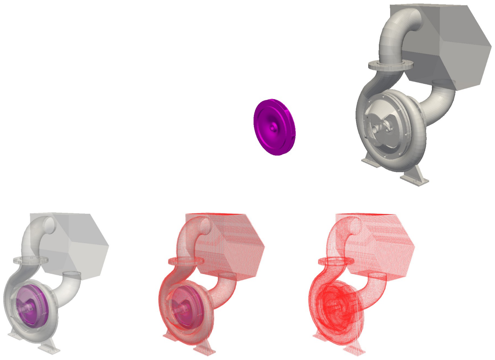
The depth diagram marks depthmin = 3 dp and depthmax = 7 dp. The two pump results compare depthmin=0 and depthmin=0.2; their dark rendering backgrounds are part of the original visualisation. The separate current-reference advanced-fill XML above illustrates <depth depthmin="0.02" depthmax="0.1"/>. These distinct examples retain their original values.
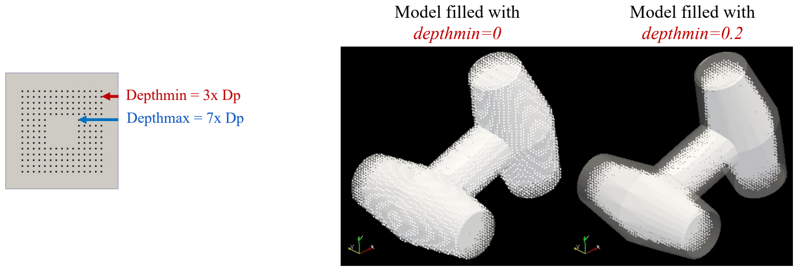
drawbathymetry generates a regular surface grid from XYZ or VTK elevation points. zpoints specifies the data and optional translation, rotation, scaling and selection. grid dp="..." specifies grid spacing independently of the particle-generation dp. initdomain defines the initial grid extent. expands extends its X/Y borders and can specify first and second extension sizes and elevations. periodicx and periodicy adjust opposite elevations; rampwidth specifies the transition and flatwidth extends the periodic limits. finalmove translates the completed grid. savepoints and savegrid write diagnostic geometry.
<drawbathymetry>
<zpoints file="FileData.xyz" comment="File with positions using format XYZ or VTK">
<move x="1" y="2" z="3"/>
<rotate x="15" y="30" z="45"/>
<scale x="1" y="1" z="2"/>
<selection>
<point x="10" y="15"/>
<size x="100" y="150"/>
</selection>
</zpoints>
<grid dp="0.1">
<initdomain>
<point x="25" y="35"/>
<size x="40" y="20"/>
</initdomain>
<expands>
<xmin size="5" z="25" size2="52" z2="252"/>
<xmax size="4" z="24" size2="54"/>
<ymin size="3" size2="53" z2="253"/>
<ymax size="-2"/>
</expands>
<periodicx rampwidth="0"/>
<periodicy rampwidth="10" flatwidth="1"/>
<finalmove x="18" y="10" z="28"/>
</grid>
<savepoints file="true" comment="Saves VTK with final positions for debug (default=false)"/>
<savegrid file="true" comment="Saves VTK with final grid cells for debug (default=false)"/>
</drawbathymetry>
The source bathymetry illustration uses the following inputs. Its old rotate row uses angx/angy/angz and its diagnostic rows use value, whereas the current template above uses other attribute spellings. The table preserves the original data and disabled row without presenting a silently migrated executable configuration.
| Source row | Original values |
|---|---|
| Boundary marker | setmkbound mk="0" |
| Input | zpoints file="Points.xyz" |
| Translation | move x="-439998.30" y="-1148505.00" z="0" |
| Rotation | rotate angx="0" angy="0" angz="0" |
| Scale | scale x="1" y="1" z="2" |
| Selection | point x="170" y="20"; size x="110" y="70" |
| Grid spacing | grid dp="2" |
| Initial grid | point x="180" y="30"; size x="90" y="50" |
| Expansion | xmin size="10" z="15" size2="8" |
| Disabled source comment | <!-- <periodicx rampwidth="8" flatwidth="4"/> --> |
| Active periodic boundary | periodicy rampwidth="8" |
| Final translation | finalmove x="-162" y="-30" z="-19" |
| Diagnostic points | savepoints value="true" comment="Saves VTK with final for debug (default=0)" |
| Diagnostic grid | savegrid value="true" comment="Saves VTK with final grid cells for debug (default=0)" |
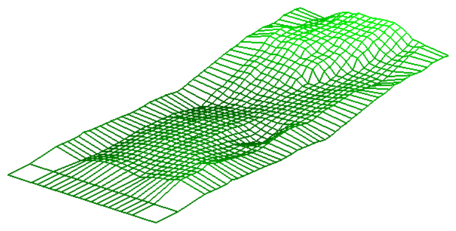
Filling, redrawing and free drawing¶
Filling starts from a seed point. fillpoint fills the connected region; fillbox, fillfigure and fillprism additionally restrict it to the corresponding volume. fillvoidpoint is the direct void-fill alternative. modefill identifies the populations to fill (void, fluid, bound) or uses border to fill within limits identified by existing points. A seed outside the intended enclosed volume can produce a different region.
redraw changes qualifying nodes to the currently selected marker; mkfluid or mkbound restricts the original population. redrawnear additionally requires neighbouring nodes of a selected type or marker. targettp and targetmk describe the nodes to change; bordertp and bordermk describe the neighbours. times repeats the operation. redrawbox and redrawnearbox restrict the affected region.
The source demonstrates three distinct operations: change every fluid-marker-1 node to boundary marker 3; change fluid nodes adjacent to any boundary; and change void nodes adjacent specifically to boundary marker 2. The hole-closing workflow first draws the boundary, redraws neighbouring void nodes to close small gaps, and then fills with fluid. Reversing that sequence can change the result.
setfrdrawmode auto="true" draws particles away from the Cartesian lattice while maintaining the initial dp spacing; return to auto="false" afterwards. Its rounded-surface examples show why free drawing and lattice drawing produce different particle layouts.
<fillbox x="0" y="1" z="0">
<modefill>border</modefill>
<point x="0.1" y="1" z="1.1"/>
<size x="3" y="4" z="2"/>
</fillbox>
<redrawnear targettp="fluid" bordertp="bound"/>
The red point is the fill seed (0.14, -0.1, -0.39). The black wireframe is the limiting box, starting at (-0.6, -0.39, -0.8) with size (0.9, 0.68, 0.52). Filling uses fluid marker 0 and modefill=void, as in the pump fragment above; it fills void space only up to the specified box limits.
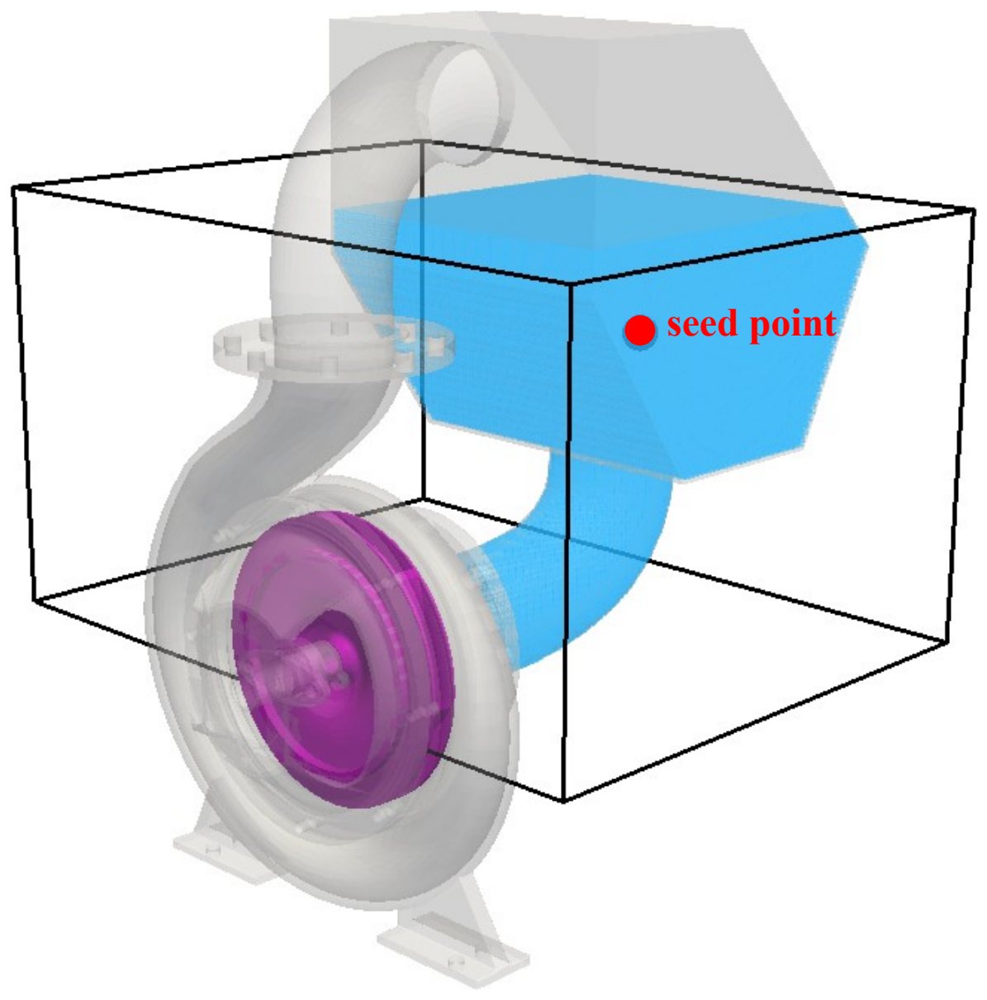
The original node example uses the following three alternatives independently, starting from the common upper-left panel. A changes fluid-marker-1 nodes to boundary marker 3; B changes fluid nodes next to any boundary; C changes void nodes next to boundary marker 2. The arrows retain those panel correspondences.
<!-- A -->
<setmkbound mk="3"/>
<redraw mkfluid="1"/>
<!-- B: alternative -->
<setmkbound mk="3"/>
<redrawnear targettp="fluid" bordertp="bound"/>
<!-- C: alternative -->
<setmkbound mk="3"/>
<redrawnear targettp="void" bordertp="bound" bordermk="2"/>
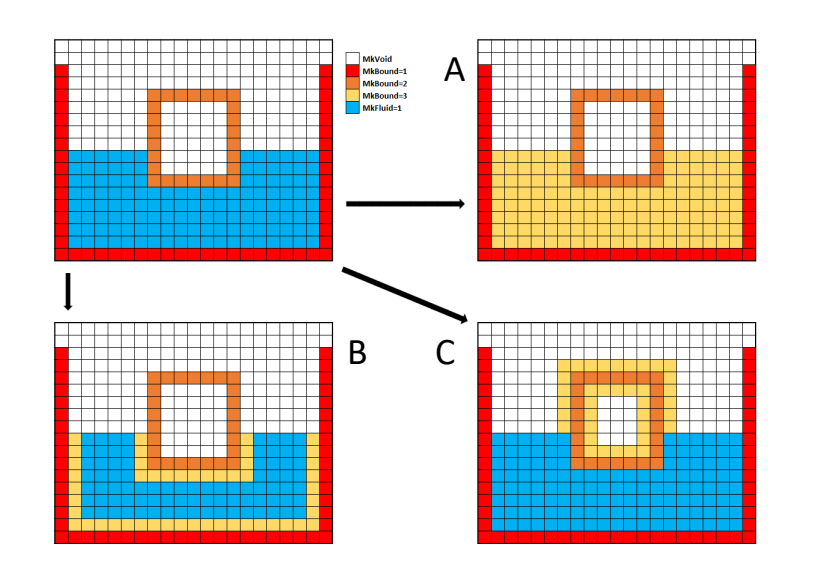
The source sphere uses radius 5.0 and centre (0, 0, 5.0) with boundary marker 0 named Sphere, setdrawmode mode="full", and setfrdrawmode auto="true", restored to false after drawing. The face cylinder uses radius 4.0, mask="0", endpoints (0, 0, 0) and (0, 0, 10), and boundary marker 0 named Cylinder; free drawing is likewise switched off afterwards. The panels compare normal lattice sampling with free drawing while maintaining the same initial dp.
These are command fragments for case/casedef/geometry/commands/mainlist, not complete standalone cases.
Sphere
<setdrawmode mode="full"/>
<setmkbound mk="0" name="Sphere"/>
<setfrdrawmode auto="true"/>
<drawsphere radius="5.0">
<point x="0" y="0" z="5.0"/>
</drawsphere>
<setfrdrawmode auto="false"/>
Cylinder
<setdrawmode mode="face"/>
<setmkbound mk="0" name="Cylinder"/>
<setfrdrawmode auto="true"/>
<drawcylinder radius="4.0" mask="0">
<point x="0" y="0" z="0"/>
<point x="0" y="0" z="10"/>
</drawcylinder>
<setfrdrawmode auto="false"/>
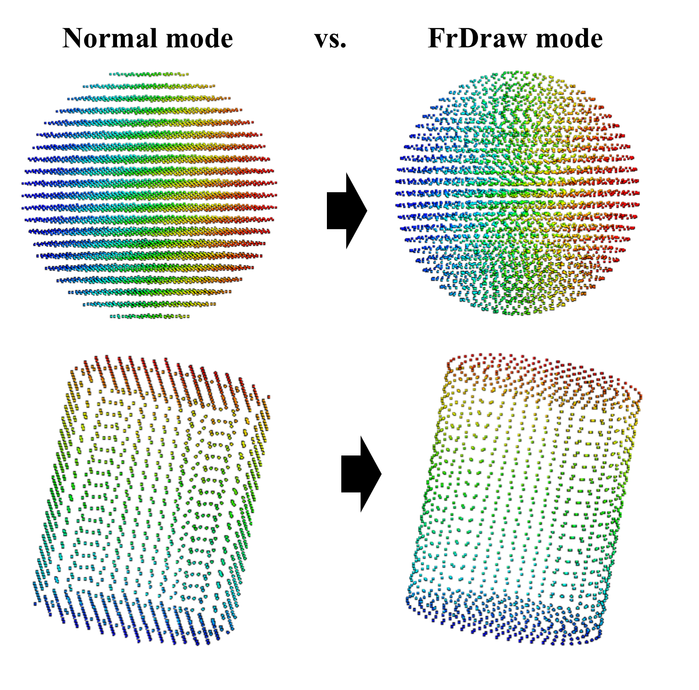
The three stages are boundary drawing, closing boundary holes with neighbouring void nodes, and filling the fluid region. The corresponding source fragment keeps the original sequence and Bottom.vtk dependency.
<mainlist>
<setshapemode>real | bound</setshapemode>
<setdrawmode mode="full"/>
<!-- Creates vertical piston. -->
<setmkbound mk="0"/>
<drawline>
<point x="0" y="0" z="2"/>
<point x="0" y="0" z="0"/>
</drawline>
<!-- Creates bottom from external geometry. -->
<setmkbound mk="1"/>
<drawfilevtk file="Bottom.vtk"/>
<!-- Fills the holes. -->
<setmkbound mk="2"/>
<redrawnear times="1" targettp="void" bordertp="bound" bordermk="1"/>
<!-- Fills fluid area. -->
<setmkfluid mk="0"/>
<fillbox x="0.5" y="0" z="0.5">
<modefill>void</modefill>
<point x="0" y="-1" z="0"/>
<size x="6" y="2" z="1.5"/>
</fillbox>
</mainlist>
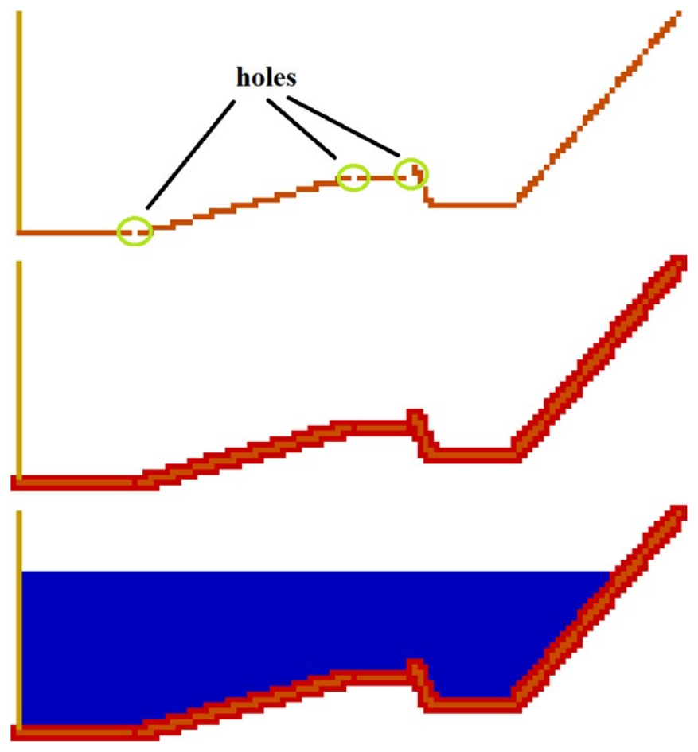
Variables and expressions¶
Variables allow the same dimensions, filenames and numerical relationships to be reused without manually editing each occurrence. newvar creates numerical variables in double precision; newvarstr creates text variables. newvarcte and newvarstrcte create constants that cannot subsequently be changed. Boolean true and false are stored numerically as 1 and 0. Variables are created in sequence, so a definition may use earlier definitions.
Use setvar or setvarstr to change a non-constant variable. In the current template the metadata attributes are _rem for a comment and _print for displaying a value. printf text="..." displays expressions and text. User names are global within the case definition; avoid duplicate declarations or redefining automatic constants.
geometry/predefinition is evaluated before geometry/definition, allowing variables to define dp and domain limits. Drawing-list variables are evaluated when their commands execute. A numeric variable or expression used as an ordinary XML attribute value starts with #; text substitutions use $ followed by a bracketed expression, for example $[file]. Inside a variable-expression definition, bracketed substitutions can concatenate text and numerical results. Preserve expressions rather than replacing them with an approximate decimal.
<predefinition>
<newvarcte SizeX="1.2" _rem="Domain width" />
<newvar SizeZ="SizeX*0.8" Dp="SizeX/100" />
<newvarstr FileSTL="cube.stl" />
</predefinition>
The variables above can supply dp="#Dp" and expressions for the domain coordinates; the imported object can use file="$[FileSTL]". The presentation's separate example uses lowercase sizex and sizez, with maximum Z #sizez. Its printed X bounds are #-sizex/2 and #-sizex. For its positive sizex=1.2, that ordering needs confirmation; no intended positive upper bound is inferred here. A numerical or logical if condition can control recognised drawing commands.
| Automatically supplied values | Availability described by the source |
|---|---|
Gravity_x, Gravity_y, Gravity_z, Rhop0 |
Loaded before predefinition. |
Dp |
Initial spacing; predefinition can be used to define its final value. |
PosMin_x/y/z, PosMax_x/y/z |
Loaded or calculated domain limits. |
CaseName, Data2D, Data2DPosy, H, MassBound, MassFluid |
Calculated before drawing-list evaluation. |
Solver B, Gamma, TimeMax, TimeOut and the preceding physical constants |
Available when the solver creates its execution variables. |
exportvar vars="..." selects user variables passed to the generated execution/uservars section. The current template supports inclusions and exclusions such as all,-Dp,-PosMin_?. Generated varnum and varstr entries are execution metadata, not replacements for the original variable definitions.
Operators and functions¶
Arithmetic uses +, -, * and /; comparison uses ==, !=, <, >, <= and >=; the source presentation writes logical NOT, OR and AND as !, || and @@ respectively. Use the operator spelling documented for the expression evaluator supplied with the case. Escape XML-sensitive characters inside attributes. Parentheses set evaluation order.
The current template illustrates pi, e, float, int, floor, ceil, round, min, max, abs, fmod, fmodr, sqrt, exp, log, log10 and pow. Trigonometric functions sin, cos and tan use radians; sindg, cosdg and tandg use degrees. Hyperbolic and inverse functions include sinh, cosh, tanh, asin, acos, atan and atan2.
For minimum and maximum selection, the current template demonstrates min(a,b), min(a,b,c), max(a,b) and max(a,b,c). The presentation additionally lists four-argument forms; those signatures are not established by the inspected current template. It defines fmodr(a,b) as round(fmod(a,b)), whereas the current template lists the function without defining that identity. These source-only details require confirmation before being treated as current evaluator rules.
eval(condition,a,b) selects a or b. wavelength(gravity,depth,period) calculates wavelength from its named inputs. The current template illustrates random-number functions as randinit(a), rand(a), rand(a,b) and randint(a,b); use these documented names rather than assuming that an older random() spelling is interchangeable. Seed selection affects reproducibility. The template also includes position-rounding and matrix-component functions for geometry-dependent expressions.
roundpos(pos,posmin,dp) rounds a position to a specified grid; roundposx, roundposy and roundposz use the corresponding configured directions. mulmatx(x,y,z), mulmaty(x,y,z) and mulmatz(x,y,z) return components after applying the drawing transformation matrix. The current template also demonstrates indexed names, such as x[1], and bracketed expressions in text-variable definitions. These functions preserve geometric relationships without replacing expressions by rounded constants.
Variables are used in the source's geometry, initials, floatings, properties, motion, normals, special and parameters sections. The evaluation stage still matters: values calculated only after geometry generation cannot be used to define earlier input. exportvar controls which user variables are available when execution sections are evaluated.